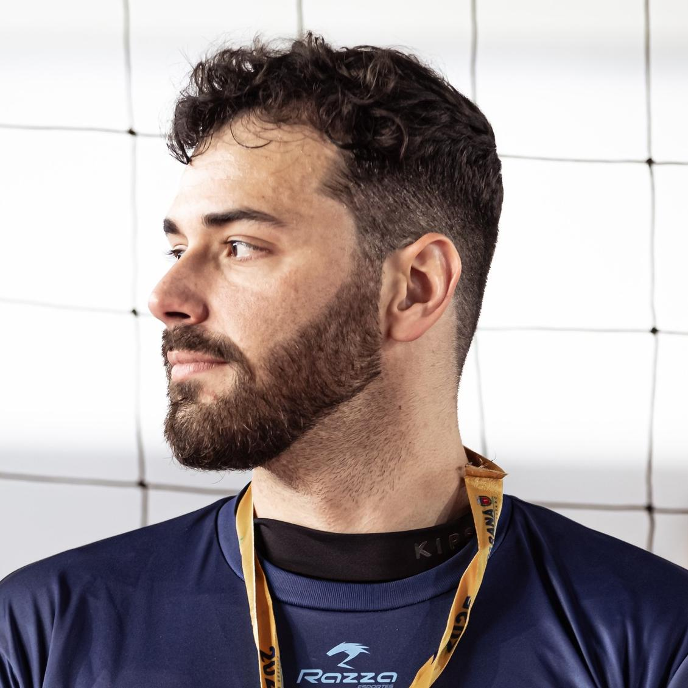

Lineu Alberto
Home
Sobre mim
Formação e Trajetória
Materiais
Publicações
Vídeos e Lives
Cursos e Disciplinas
Outros materiais
Galeria
Lineu Alberto
Cavazani de Freitas
Coordenador de Estatística e Ciência de Dados | Estatístico | Cientista de Dados

❮
❯